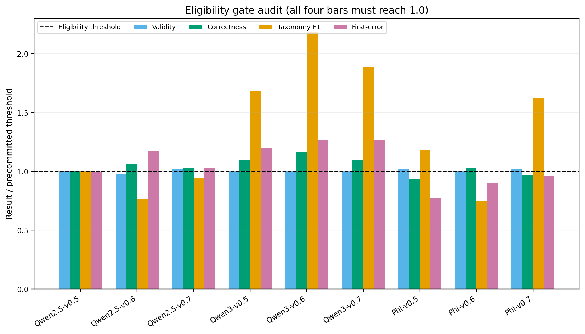
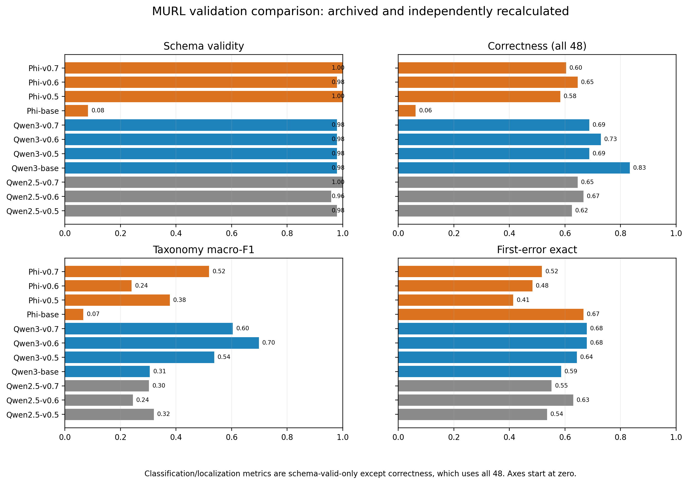
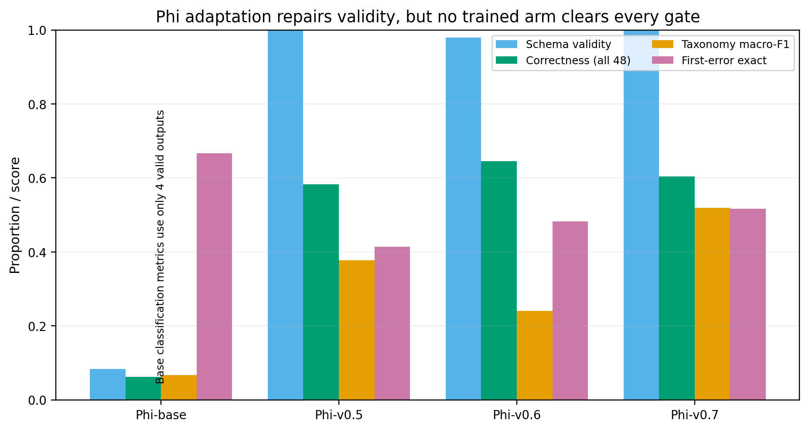
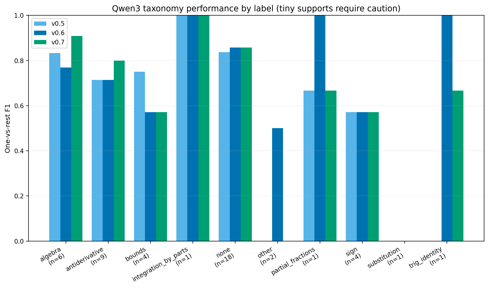
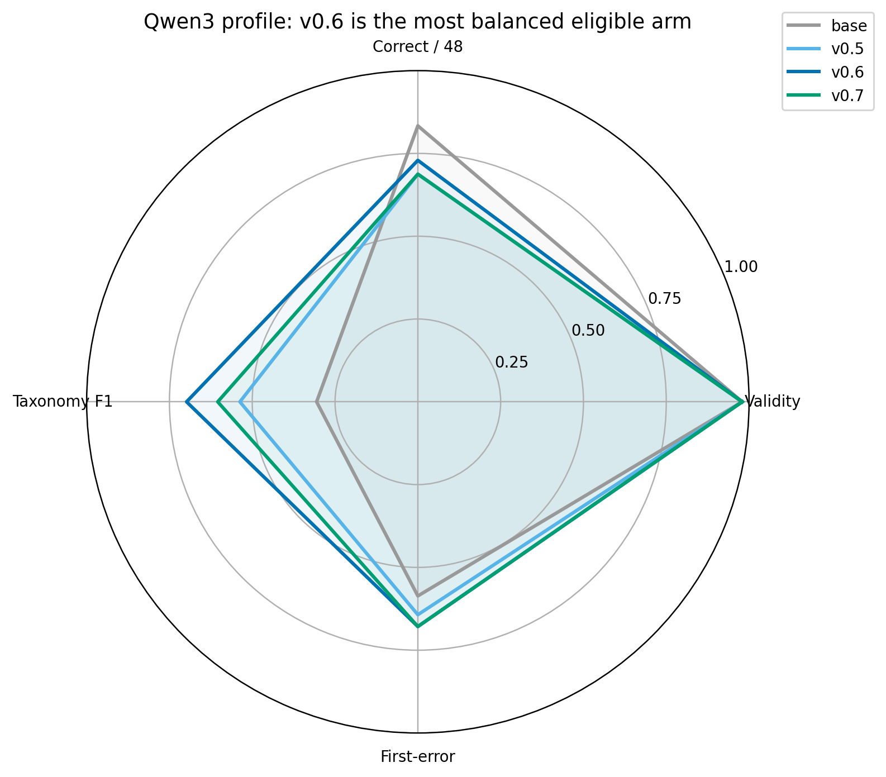
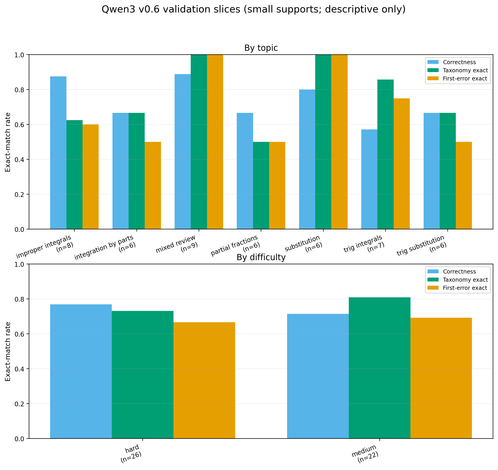
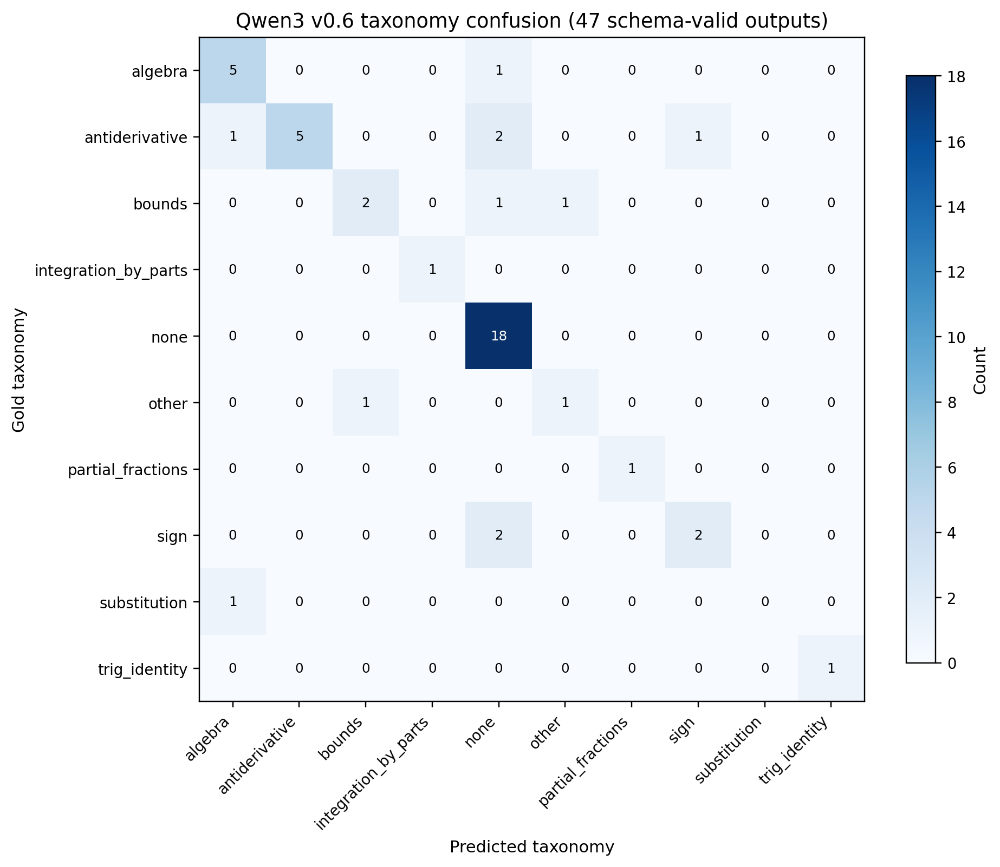
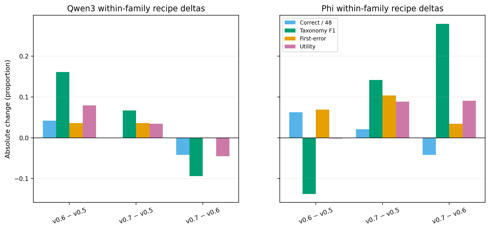

# MURL v0.8 final reproducibility notebook This notebook reproduces the final cross-family audit from archived **training and validation** bundles without model downloads. It does not open the held-out test split or any test-results archive. The external helper is the source of truth so the notebook and command-line workflow cannot drift.
from pathlib import Path
import json, subprocess, sys
repo = Path.cwd()
if not (repo / 'scripts' / 'v08_reproducibility.py').exists():
repo = repo.parent
result = subprocess.run(
[sys.executable, 'scripts/v08_reproducibility.py'],
cwd=repo, check=True, text=True, capture_output=True
)
decision = json.loads((repo / 'reports/v0.8-final/decision.json').read_text())
print(f"Archive hashes and CRC: {decision['zip_archives_hashed']}/{decision['zip_archives_hashed']} PASS")
print(f"Training bundles: {decision['training_archives_audited']}/{decision['training_archives_audited']} required-content audits PASS")
print(f"Validation aggregates: {decision['validation_archives_recalculated']}/{decision['validation_archives_recalculated']} independently recalculated PASS")
print(f"Selected winner: {decision['winner']}; held-out test executed: {decision['held_out_test_executed']}")Archive hashes and CRC: 54/54 PASS Training bundles: 6/6 required-content audits PASS Validation aggregates: 11/11 independently recalculated PASS Selected winner: qwen3-v0.6; held-out test executed: False
import csv
rows = list(csv.DictReader((repo / 'reports/v0.8-final/model-summary.csv').open()))
eligible = [r for r in rows if r['eligible'] == 'True']
print('Eligible arms:', ', '.join(f"{r['family']} {r['arm']}" for r in eligible))
print('Family nominees: Qwen2.5 v0.5; Qwen3 v0.6; Phi none')
winner = next(r for r in rows if r['key'] == 'qwen3-v0.6')
print(f"Winner utility: {float(winner['utility']):.4f}")Eligible arms: Qwen2.5 v0.5, Qwen3 v0.5, Qwen3 v0.6, Qwen3 v0.7 Family nominees: Qwen2.5 v0.5; Qwen3 v0.6; Phi none Winner utility: 0.7020
## Generated figures The helper writes publication-ready PNG and SVG versions of the main comparison, eligibility gates, within-family deltas, Qwen3 profile, Phi improvement, per-label taxonomy, confusion matrix, and topic/difficulty slices under `reports/v0.8-final/figures/`.
figure_dir = repo / 'reports/v0.8-final/figures'
pngs = sorted(figure_dir.glob('*.png'))
svgs = sorted(figure_dir.glob('*.svg'))
print(f'{len(pngs)} PNG figures; {len(svgs)} SVG figures')8 PNG figures; 8 SVG figures
## Held-out execution gate (disabled) The following cell is intentionally non-executable metadata, not evaluation code. The exact authorized procedure is in the final report. It may be replaced with a separately reviewed runner only after explicit authorization for the single frozen Qwen3 v0.6 winner.
EXPLICIT_HELDOUT_AUTHORIZATION = False
if not EXPLICIT_HELDOUT_AUTHORIZATION:
raise RuntimeError('Held-out test remains frozen. Obtain separate explicit authorization.')
# No test loading or evaluation code is stored in this notebook.






